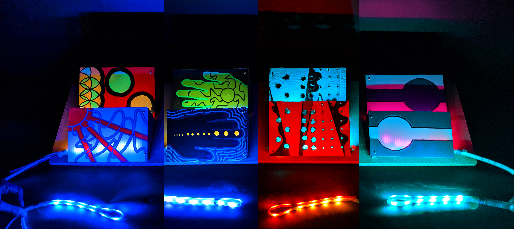
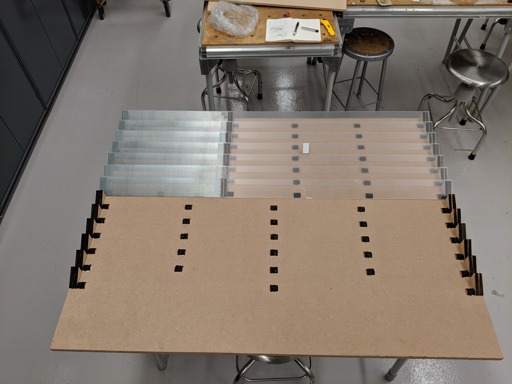
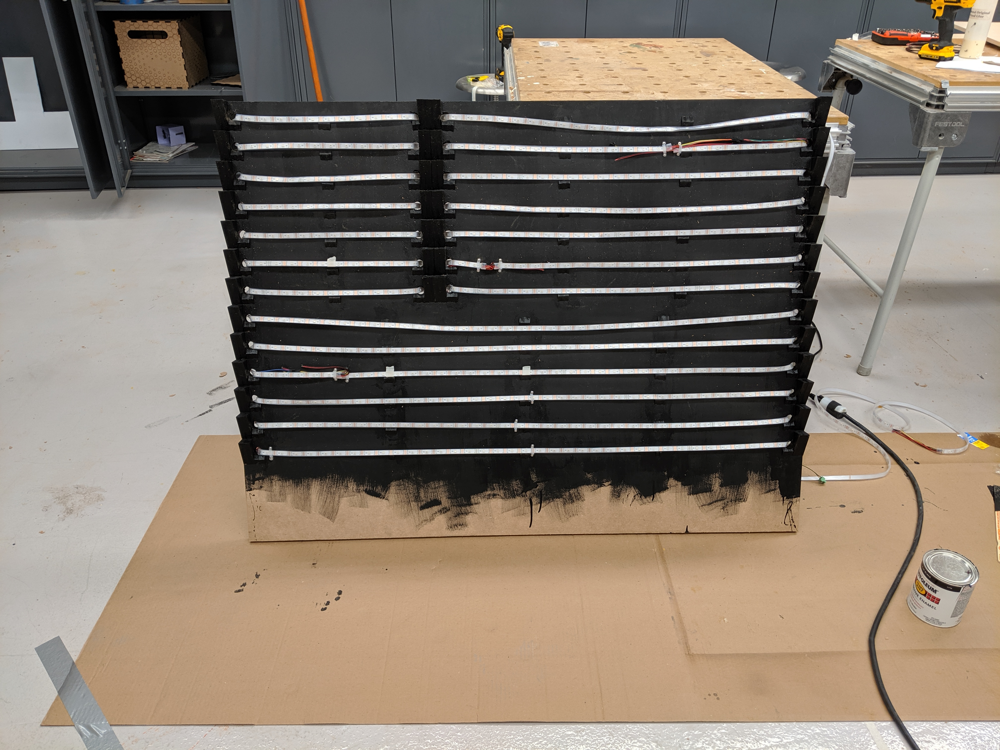
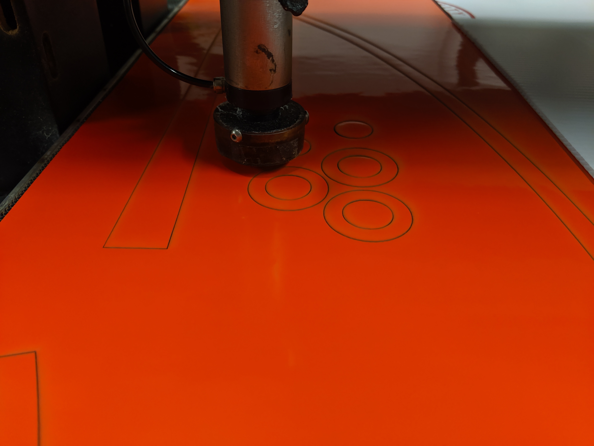
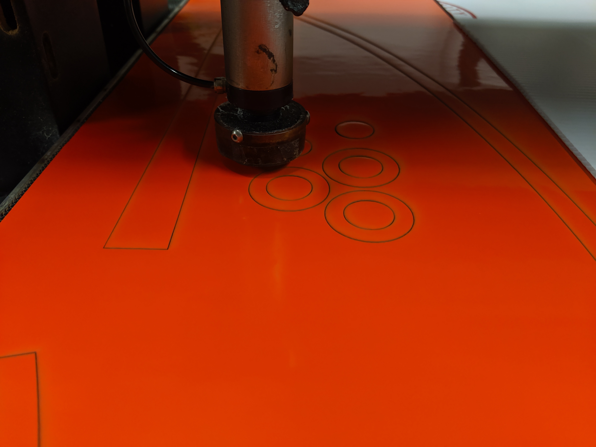
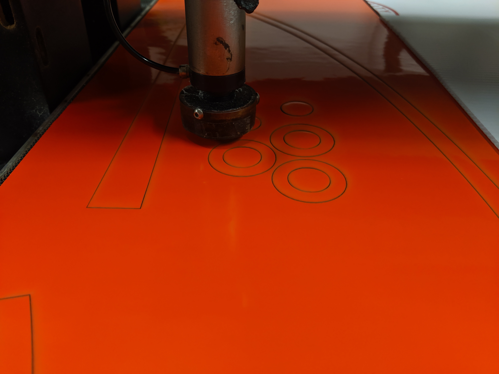
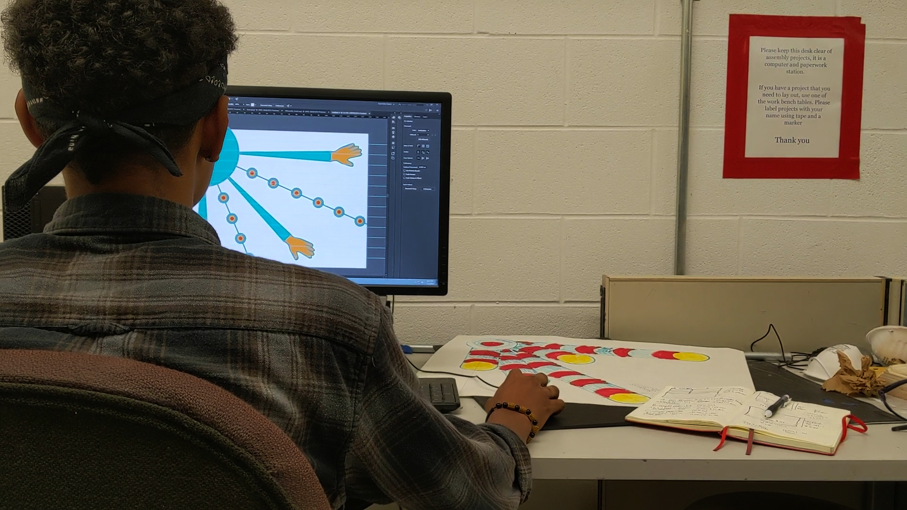
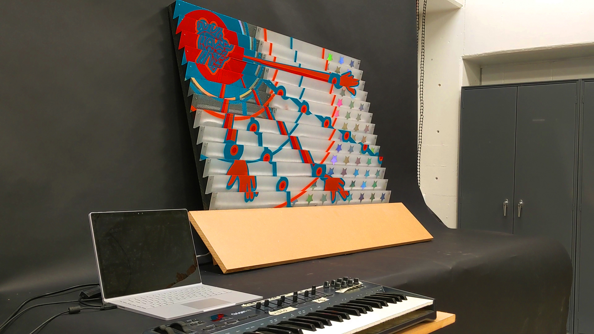

Introduction
An exploration of additive color perception, 50 Shades of America is an audio-visual installation created to celebrate July 4th. Through Touchdesigner and physical prototyping, my team and I were collaboratively able to add a sense of motion onto a stationary canvas. The result is a flag like sculpture that reflects the many shades that make up the identity of America.

Lighting Test
In order to achieve the desired lighting effects, we played around with the materiality and combinations of positive vs. negative space. This was an important step in the prototyping process as it helped us visualize the effect without expending too many resources. In fact, this was a large proprietor of why we ended up using vinyl sheets in our final product.


 




Canvas Design and Manipulation
The artist, Phillip Ekwaro-Osire, designed the canvas with a workflow of starting from markers on paper, scanned illustrations, converting to illustrator SVG, and finally to laser cutting designs. This allowed us to achieve the highest quality finish possible, thus not impeding the experience of the light. In order to tie the visual manipulation to the audio, producer Frederick Ekwaro-Osire mixed a tune together, and also utilized a familiar MIDI board to control lighting animations.